전자책 공유, Codex · python-pptx 확인
1 ~ 6장책 → 슬라이드, 디자인 본뜨기, 예시 A · B
7 ~ 15장design.md → 구성안 → PPTX 생성
16 ~ 19장휴식 10분
비교, 다듬기, 도식 · 차트, 시간 조정
21 ~ 26장좋은 장, 리허설, 문제 해결, 4차시 예고
27 ~ 32장바이브코딩4기/03_PPT, 그 안에 예시 폴더
2차시 결과물 → 03_PPT 안으로
데스크톱 앱 → 왼쪽 위 Codex → 작업 폴더 03_PPT 선택 · 같은 계정 로그인 확인
승인 요청 → 내용 읽고 허용
이 폴더에서 PPT 작업을 할 거야. 아래를 확인해서 표로 알려 줘. - python 버전 (3.12 이상인지) - python-pptx 설치 여부와 버전 - pymupdf 설치 여부 (PDF 읽기용) - 이 폴더의 파일 목록 없는 패키지는 설치 명령만 먼저 보여 줘. 내가 허용하면 그때 설치해 줘.
| 확인 결과 | 다음 행동 |
|---|---|
| python · python-pptx · pymupdf 모두 있음 | 테스트 PPTX 1장 생성 → PowerPoint로 열기 |
| python-pptx 또는 pymupdf 없음 | Codex가 보여 준 pip install 명령 확인 → 허용 |
| Codex 메뉴 없음 · 로그인 실패 | 오류 화면 캡처 → 단톡방, 오늘은 짝 화면 보며 진행 또는 강사 화면 시연 따라 보기 |
| 4차시 준비 점검 | Codex에 「설치된 스킬 목록 보여 줘」 → hyperframes 확인. 없으면 과제로 설치 |
python-pptx로 16:9 슬라이드 1장짜리 테스트.pptx 를 만들어 줘. 제목은 「설치 확인 완료」, 글꼴은 맑은 고딕.
→ 「저 글 다 읽을 거면 왜 발표를 하지?」
→ 책의 글자 30% 이하, 나머지 70%는 입으로
제목이 곧 결론. 제목만 읽어도 내용 전달
한 장 60자 이내. 문장 대신 구절
장당 30~40초. 발표자 노트에
| # | 슬라이드 | 전자책에서 가져오는 곳 | 시간 |
|---|---|---|---|
| 1 | 표지 제목 · 부제 · 발표자 | 표지 | 20초 |
| 2 | 청중의 문제 「이런 상황이시죠」 | 서문 · 1장 도입 | 40초 |
| 3 | 이 발표의 약속 끝나면 할 수 있는 것 3가지 | 기획서 약속 3가지 | 40초 |
| 4 ~ 6 | 핵심 1 · 2 · 3 각 한 장, 제목이 결론 | 챕터 1 ~ 3의 방법 | 각 60초 |
| 7 | 사례 내 경험 전후 비교 | 가장 강한 챕터의 사례 | 60초 |
| 8 | 방법 요약 3단계 도식 | 챕터 4 · 5의 방법 | 60초 |
| 9 | 지금 할 일 오늘 10분 과제 1개 | 마무리의 당장 할 일 | 40초 |
| 10 | 마무리 한 문장 + 연락처 · 전자책 안내 | 저자소개 | 30초 |
| 요소 | 보는 곳 | 예시 A · 에디토리얼 | 예시 B · 컬러 블록 |
|---|---|---|---|
| 색 | 배경 · 글자 · 포인트 HEX | 흰 #FFFFFF · 포인트 #C8442B 1색 | 코발트 #1E40AF · 노랑 #FACC15 · 검정 |
| 폰트 | 제목용 · 본문용 · 크기 비율 | 나눔명조 제목 + 맑은 고딕 본문 | 맑은 고딕 Bold 위주 |
| 여백 | 좌우 여백 · 제목 위치 | 좌우 96px, 머리글 아래 제목 | 블록 안 좌측 64px |
| 레이아웃 패턴 | 장 유형별 배치 | 머리글 선 + 3열 · 목록 · 타임라인 | 좌 40% 블록 + 우 내용, 3등분 |
| 강조 방식 | 무엇을 어떻게 튀게 | 포인트색 장당 1곳 | 큰 숫자 + 최고값만 노랑 |
→ 예시의 내용 흐름까지 따라감
→ 디자인만 같은 계열, 내용은 온전히 내 책
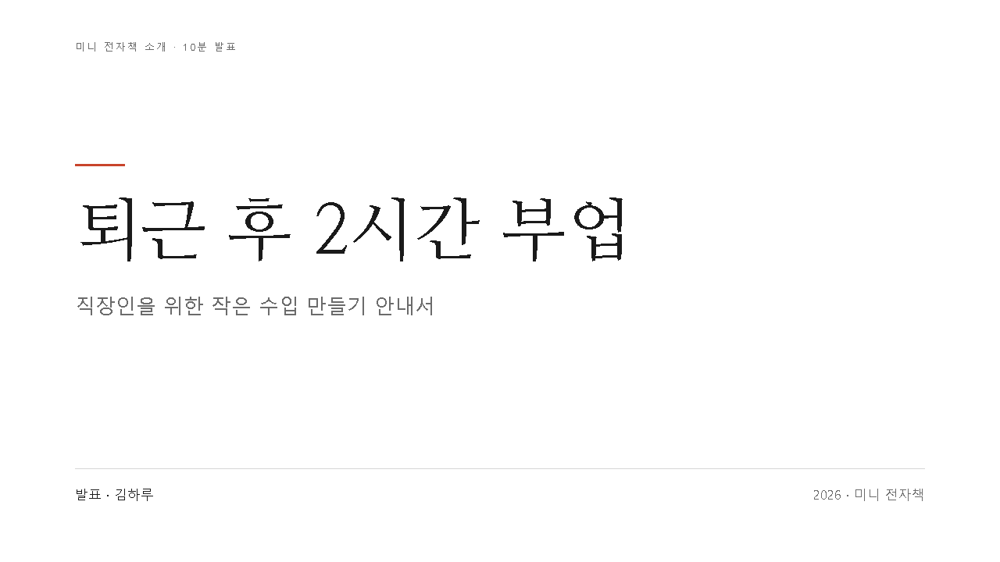
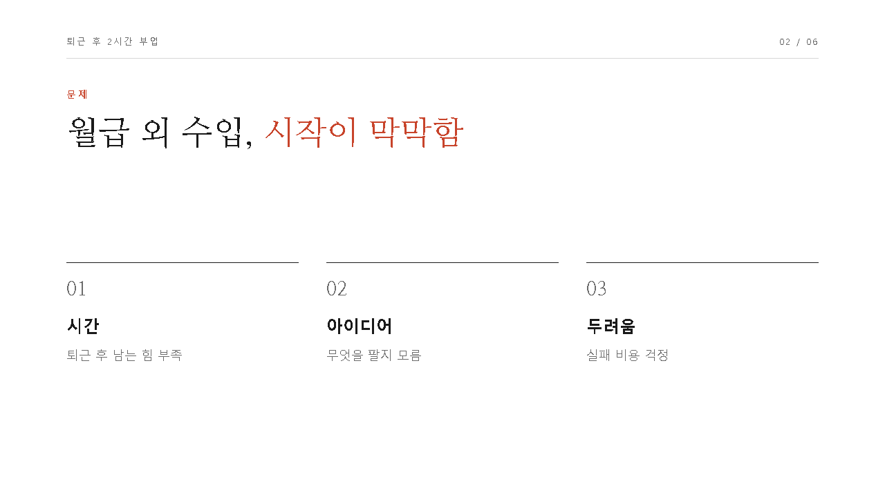
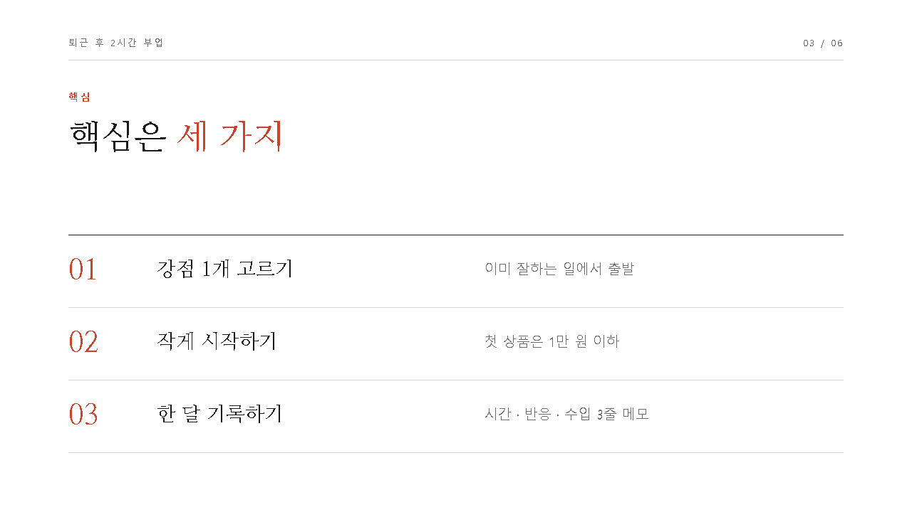
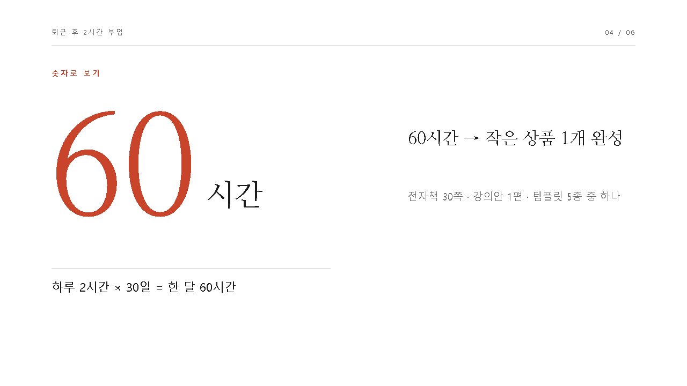
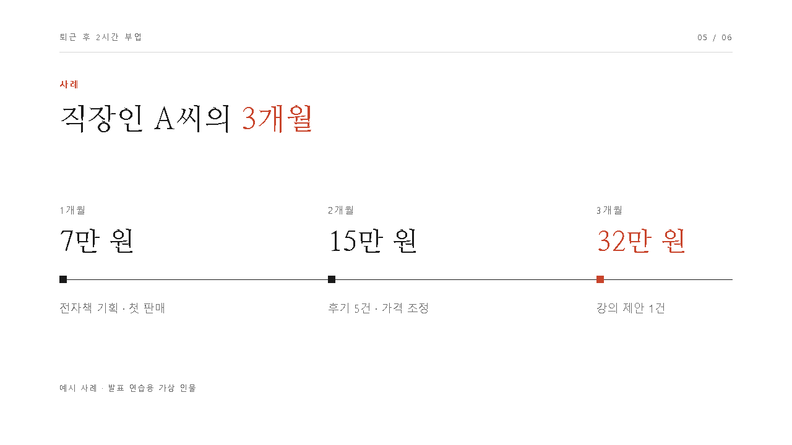
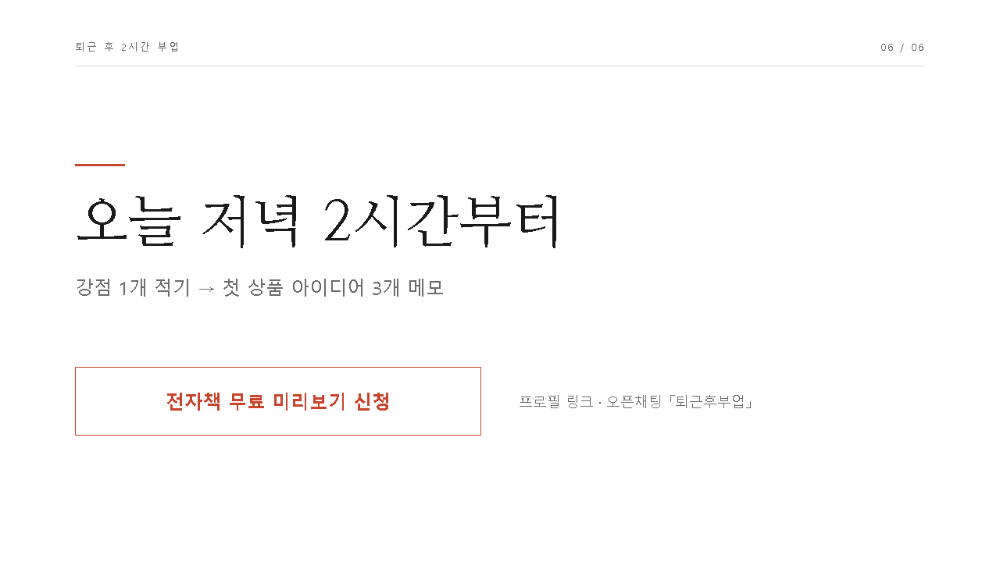
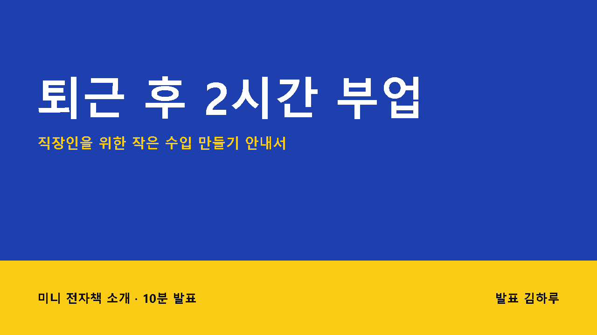
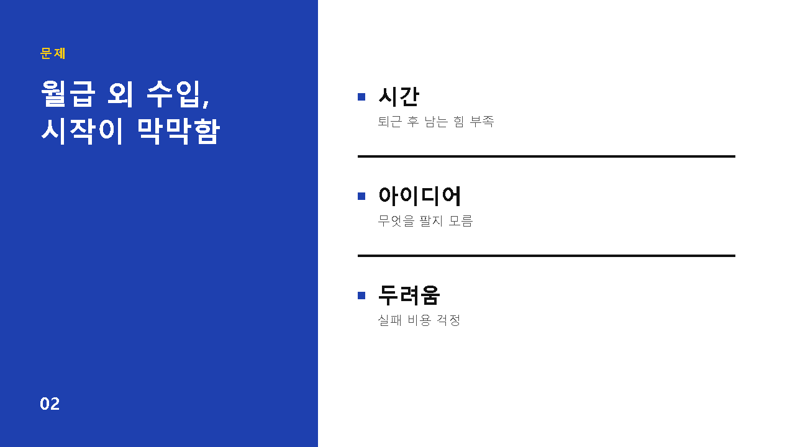
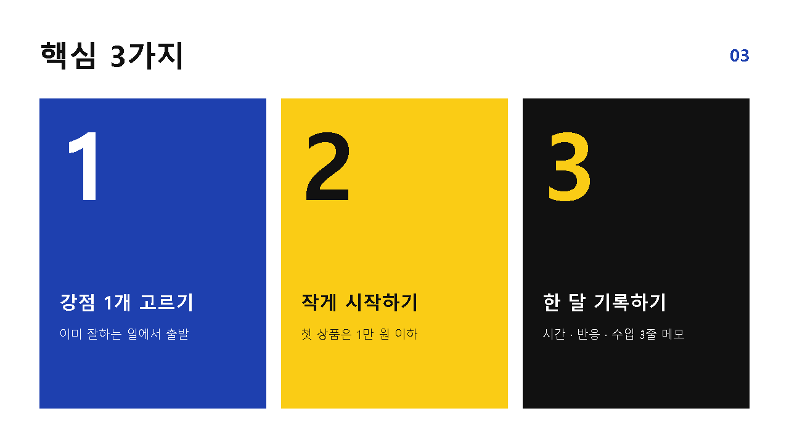
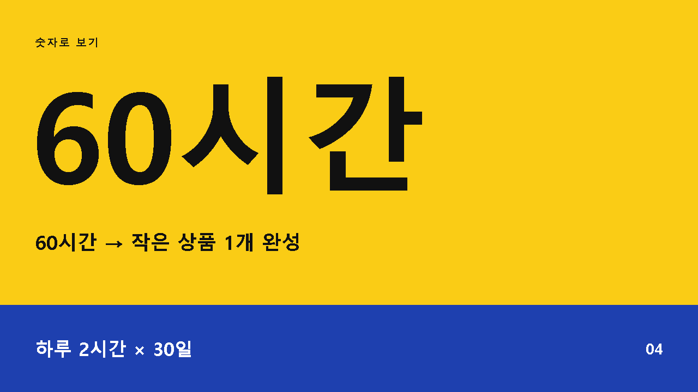
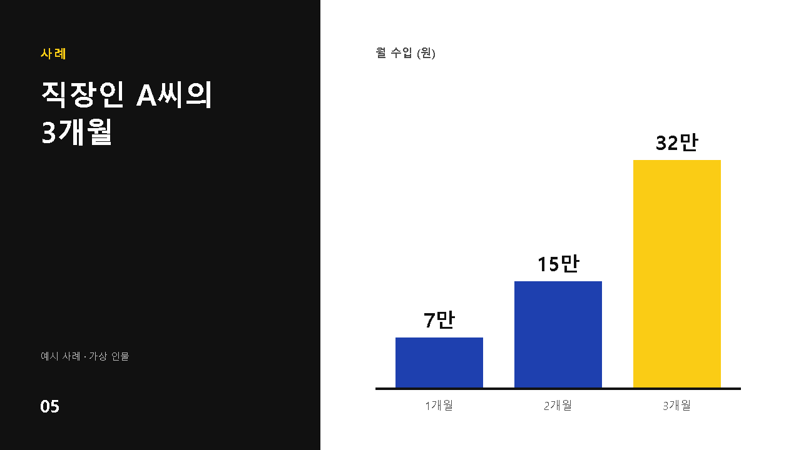
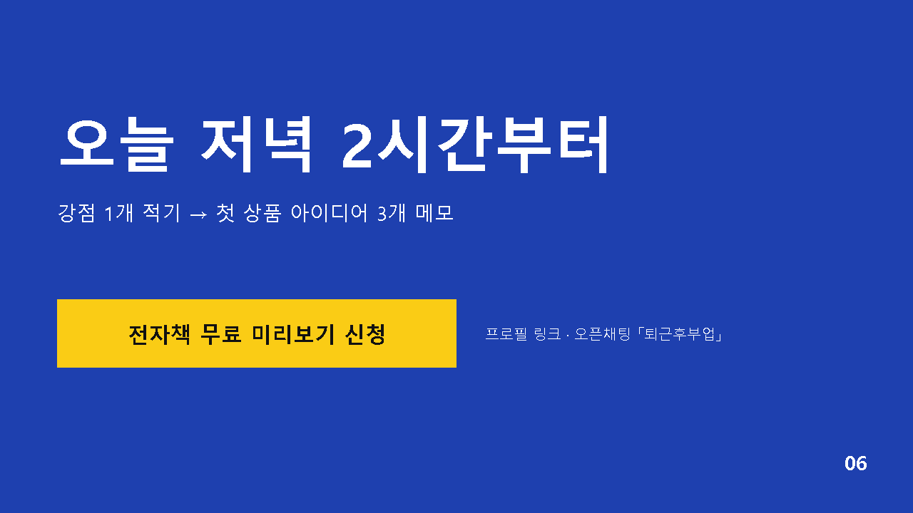
준비물 칸 링크 (lecture/samples/)
강의 · 설명형 → A, 제안 · 영업형 → B
PPTX = 정확한 값, PDF = 보이는 모양
파일 이름은 그대로
바이브코딩4기/
└ 03_PPT/
├ 예시/
│ ├ sample-a.pptx
│ └ sample-a.pdf
├ 내전자책.pdf
└ (Codex가 만들 파일)
design.md · 구성안.md
PPT_이름_1020.pptx# 디자인 규칙 · 에디토리얼 미니멀 - 색: 배경 #FFFFFF / 글자 #1A1A1A 보조 #6B6B6B / 선 #D6D6D6 포인트 #C8442B (장당 1곳) - 폰트: 제목 나눔명조 / 본문 맑은 고딕 - 크기: 장 제목 36pt / 본문 14~18pt - 여백: 좌우 1인치, 상단 머리글 + 1px 선 - 패턴: 3열 · 목록 · 숫자 · 타임라인 - 강조: 포인트색은 핵심어 하나만
예시 폴더의 sample-a.pptx 와 .pdf 는 내가 본뜨려는 디자인 예시야.
1. python-pptx로 PPTX를 열어 장마다 배경색, 도형 색, 글꼴 이름, 글자 크기, 위치 · 여백 값을 뽑아 줘
2. pymupdf로 PDF를 열어 페이지 구성을 확인해 줘
3. design.md 로 정리해 줘. 항목: 색(HEX) / 폰트 / 크기 / 여백 / 레이아웃 패턴(장 유형별) / 강조 방식 / 하지 말 것
4. 내용(부업 이야기)은 빼고 규칙만. 로고 · 사진 · 문구는 가져오지 마design.md 에서 포인트색을 내 전자책 표지의 #2F6B4F 로 바꿔 줘.
레이아웃 패턴에 「표 장」과 「막대 차트 장」 규칙을 같은 스타일로 추가해 줘.
바뀐 부분만 보여 주고 저장해 줘.내전자책.pdf 를 pymupdf로 읽고 발표자료 구성안을 만들어 줘. - 발표 상황 : 강의 / 제안 / 유튜브 설명, 발표 시간 : 10분 → 10장 - 틀 : 표지 → 청중의 문제 → 약속 3가지 → 핵심 3개(각 1장) → 사례 → 방법 요약 → 지금 할 일 → 마무리 - 각 장 : 제목(결론 한 줄, 20자 이내) / 본문(구절 3개 이내, 60자 이내) / 레이아웃 패턴(design.md 의 패턴 이름) / 시각 요소 / 화자 스크립트(30~40초, 말하듯이) - 책 문장을 그대로 옮기지 말고 구절로 줄여 줘 구성안.md 로 저장해 줘.
구성안.md 와 design.md 대로 PPTX 를 만들어 줘. - python-pptx 사용, 16:9 (13.333 × 7.5 인치) - 모든 글자는 편집 가능한 텍스트 상자로 (통이미지 금지) - 글꼴 이름 직접 지정 : 제목 나눔명조 / 본문 맑은 고딕, 한글 글꼴(동아시아 글꼴)까지 - 도식은 도형으로, 숫자 차트는 실제 차트 개체로 - 장마다 발표자 노트에 화자 스크립트 - 제목 20자 · 본문 60자 넘으면 줄여서 PPT_이름_1020.pptx 로 저장하고 장별 제목 목록을 보여 줘.
python 실행 · 파일 쓰기 → 내용 읽고 허용
03_PPT 안에 PPTX 생성 여부
PowerPoint · Keynote · 구글 슬라이드 중 하나
발표자 보기에서 스크립트 표시
10분 휴식
예시 vs 내 결과, 어긋난 장 찾기
제목 크기 · 여백 · 강조색 · 숫자 장
내용 유형별 도식, 숫자는 차트 개체
발표 시간별 장 수, 프로그램에서 열기
한 번에 한 가지 고치기 → 다시 열어 확인.
PPT_이름_1020.pptx 를 python-pptx로 열어서 design.md 규칙과 비교해 줘.
색 · 글꼴 · 글자 크기 · 여백 · 글자 수 기준으로 어긋난 장을 표로 정리해 줘.
아직 고치지 말고 목록만 보여 줘.| 어디 | 증상 | 지시 예 |
|---|---|---|
| 제목 크기 | 장마다 크기 제각각 | 「모든 장 제목을 36pt로 통일, 두 줄 넘으면 글자 줄이기」 |
| 여백 | 글자가 가장자리에 붙음 | 「좌우 여백을 design.md 값 1인치로 맞추기」 |
| 강조색 | 포인트색이 여기저기 | 「포인트색은 장당 한 곳, 나머지는 검정 · 회색」 |
| 숫자 장 | 숫자가 본문에 묻힘 | 「숫자 하나만 120pt 이상, 설명 한 줄」 |
| 내용 유형 | 도식 | 예시 |
|---|---|---|
| 순서 · 단계 | 가로 화살표 3단계 | 강점 찾기 → 작게 시작 → 한 달 기록 |
| 비교 · 선택 | 좌우 2열 표 | 직접 판매 vs 플랫폼 판매 |
| 구성 요소 | 블록 3~4개 | 부업의 세 기둥 : 시간 · 기술 · 채널 |
| 숫자 변화 | 막대 또는 선 차트 | 월별 수입 1 ~ 3개월 (내가 아는 숫자만) |
| 전후 | 비포 · 애프터 2칸 | 시작 전 상황 → 3개월 후 |
시각 요소를 위 표 기준으로 다시 지정하고, 숫자 장은 python-pptx 차트 개체로 그려 줘. 데이터는 1월 7만, 2월 15만, 3월 32만만 사용, 없는 숫자는 만들지 마. 색은 design.md 대로. 바뀐 장만 알려 줘.이 발표자료를 20분용으로 늘려 줘. 핵심 3개를 각각 「원리 1장 + 해 보기 1장」으로, 사례는 실패와 성공 2장으로. 새 장도 design.md 규칙과 패턴을 그대로 따르고 발표자 노트도 써 줘. PPT_이름_1020_20분.pptx 로 따로 저장해 줘.
| 프로그램 | 여는 법 | 확인할 것 |
|---|---|---|
| PowerPoint | PPTX 더블클릭 | 슬라이드 쇼 → 발표자 보기에서 노트, 홈 탭 글꼴 이름 |
| Keynote (Mac) | 파일 → 열기 → PPTX 선택 | 글꼴 누락 알림 → 비슷한 글꼴로 대체, 도형 위치 |
| 구글 슬라이드 | 드라이브 업로드 → 연결 앱 Google Slides | 글꼴 대체 여부 (나눔명조 · Noto Sans KR 선택 가능), 발표자 노트 |
→ 청중은 읽기, 발표자는 화면 보기
→ 청중은 화면 보기, 발표자 말 듣기
| 상황 | 이렇게 |
|---|---|
| 한글 글꼴이 다른 글꼴 · 네모로 표시 | 「모든 글자에 글꼴 이름 지정, 한글(동아시아) 글꼴까지 맑은 고딕으로 다시 저장」. PC에 없는 글꼴이면 설치 또는 맑은 고딕 |
| 글자가 상자 밖으로 넘침 | 「제목 20자 · 본문 60자 제한, 넘는 장은 줄이거나 두 장으로 나누기」 |
| 이미지 깨짐 · 안 보임 | 이미지를 03_PPT 안에 두기, PNG · JPG로. 「원본 비율 유지해서 다시 넣기」 |
| No module named pptx 오류 | python-pptx 미설치 → Codex가 제안한 pip install python-pptx 허용 |
| 한글 깨진 오류 메시지 · 파일 이름 | PYTHONUTF8=1 설정 확인, 폴더 이름은 그대로 두고 새 파일 이름만 영문으로 |
| PPTX가 안 열림 · 손상 알림 | 「저장 후 python-pptx로 다시 열어 검사, 문제 있으면 다시 생성」 |
화면 공유 → 고른 예시 1장 + 내 PPTX 표지 · 문제 · 약속 세 장. 노트 보고 읽기 가능.
「예시의 규칙이 옮겨졌는가」, 「제목만 보고 내용이 전달되는가」 기준으로 채팅창에 한 줄.
예시는 규칙으로, 내용은 내 것으로.